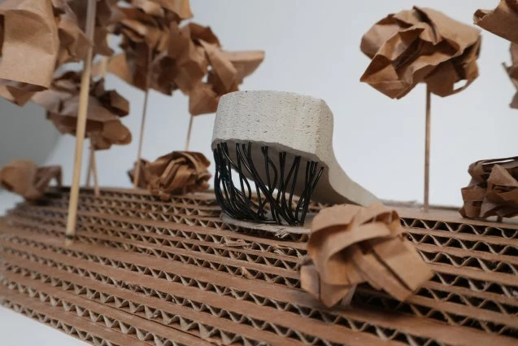

TEACHING / AUG 2026 — PRESENT
First Year Seminar Teaching Assistant
Carnegie Mellon University
Facilitating discussions and course activities, mentoring first-year students, and supporting course logistics.
ABOUT / DAWSON DUFFLEY
I’m Dawson Duffley, an architecture student at Carnegie Mellon University pursuing a Bachelor of Architecture, expected May 2030.
My interests center on adaptive reuse and community-oriented design. My work spans digital drawing and visualization, physical model making, and fabrication.
View résumé ↗
The Spatial Device / Physical modelTEACHING / AUG 2026 — PRESENT
Carnegie Mellon University
Facilitating discussions and course activities, mentoring first-year students, and supporting course logistics.
COMMUNITY / AUG 2025 — PRESENT
General member, Carnegie Mellon University chapter.
LEADERSHIP
Executive board transportation coordinator. Team member since January 2026.
TOOLS & PRACTICE
Rhino 8 · Grasshopper · V-Ray · Climate Studio · Illustrator · Photoshop · InDesign · Bluebeam
Model making · Hand drafting · Woodworking · Laser cutting · 3D printing